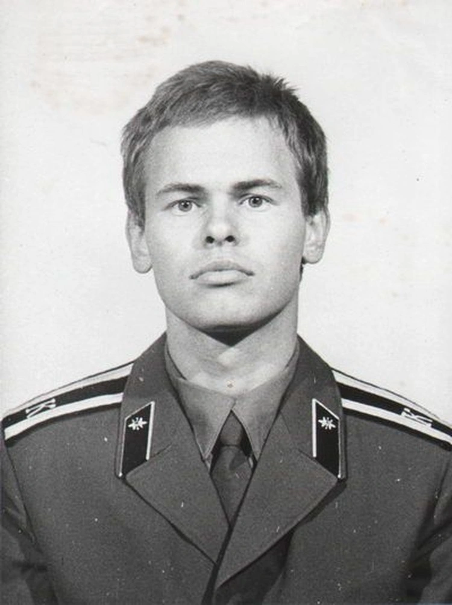

Ранние годы
Дата написания статьи
Евгений Касперский родился 2 октября 1967 года
, был единственным
ребёнком в семье. Начал обучение в средней школе № 3 имени Гастелло в
подмосковном городе Долгопрудный. Ещё в школе Касперский начал
углублённое изучение математики в рамках спецкурса. После победы в
математической олимпиаде в 1980 году был зачислен и в 1982 году
окончил физико-математическую школу-интернат № 18 имени А. Н.
Колмогорова при МГУ.

В 1987 году окончил 4-й (технический) факультет Высшей школы КГБ (в настоящее время факультет известен как Институт криптографии, связи и информатики Академии ФСБ России) в Москве, где изучал математику, криптографию и компьютерные технологии, и получил специальность «инженер-математик».